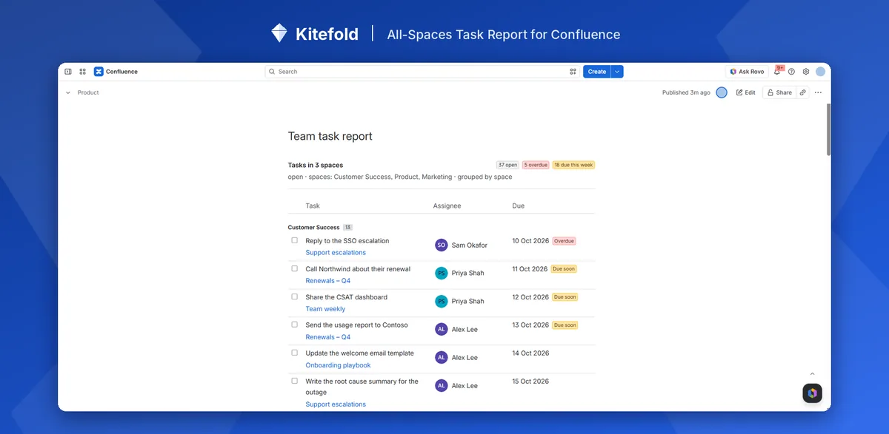

How to see all tasks across Confluence spaces
Confluence's built-in Task report macro can list tasks from several spaces, but you have to name each space, and it shows at most 40 tasks at a time. For every task from every space on one page, add a report that reads all the spaces each viewer can see.
With Confluence on its own: the Task report macro
- Edit a page, type
/task reportand choose Task report. - In Space(s) and Page(s), add each space you want. The field starts with the current space and can't be left empty.
- Optionally narrow it by Label(s), Assigned to, Created by, Created after and Task status (complete or incomplete).
- Pick 10, 20 or 40 tasks per page, choose the columns and sort order, then publish.
Where it falls short
- No “all spaces” option. Leaving the space field empty used to mean every space; now you list them one by one, and new spaces aren't added for you. Atlassian's request to bring it back, CONFCLOUD-71390, has hundreds of votes and is marked “Future consideration”.
- No totals. You see one page of 10, 20 or 40 tasks, with no count of how many there are in all or how many are overdue.
- No grouping by space, page or person, and no due-date filter.
- Not in live docs yet: it has to go on an ordinary page.
Each person's own Tasks list (from your profile picture, top right) does cover every space, but only for tasks assigned to you or created by you. See how to see the tasks assigned to you.
In one step with All-Spaces Task Report
- A Confluence admin installs All-Spaces Task Report from the Atlassian Marketplace.
- Edit any page, type
/and choose All-Spaces Task Report. The defaults already show every open task in all spaces I can see, grouped by space. - Publish. The header counts every matching task (open, overdue, due this week), not just the rows on screen, and Load more shows the next 50.
Spaces added later are included automatically. To leave some out, choose All spaces except these and type their keys. The report reads Confluence as whoever is viewing it, so restricted spaces and pages never show to people who can't open them.

Disclosure: Kitefold makes All-Spaces Task Report, so we're not neutral. The built-in options above are free and may be all you need.
Related guides
- How to find overdue tasks in Confluence
- How to see all the Confluence tasks assigned to you
- How to send a weekly reminder for overdue Confluence tasks
- Confluence tasks cheat sheet
Checked against Confluence Cloud in November 2026. Confluence changes often; if something here no longer matches what you see, email support@kitefold.app and we'll update it.